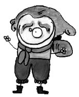

Franz Anton Mesmer (1734-1815)
Hipnozu keşfeden kişi. Hipnozu etkili bir tedavi aracı olarak kullandı. Aynı zamanda Marie Antoinette’in sarayında halkı eğlendiren bir vodvil oyuncusu olup, ekmek bulamayınca pasta yedi. Çok popüler oldu. Fakat gösteriş merakı ve hastalıkları mıknatıslarla iyileştireceğini söylemesi sonucu hakkında bilimsel bir soruşturma açıldı ve şarlatan ilan edildi.
Mesmer’in hipnoz yöntemi yıllar sonra, önce Freud’u etkilemiş, daha sonra da Nuri Alço’nun düşüncelerinin temelini oluşturmuştur. O yüzden her önünüze gelene kendinizi hipnoz ettirmeyin, sakata gelebilirsiniz.
Kendisi için “Mesmerim biçim biçim ölürüm mesmer için” şeklinde yazılan şarkı “Kop gel günahlarından”, “Haydi lili lili yar”, “Bir taş attım pencereye dıh dedi” ve benzeri şarkılar gibi İbrahim Tatlıses tarafından keşfedilerek “Esmerim biçim biçim ölürüm esmer için” şekline dönüştürülmüştür.
